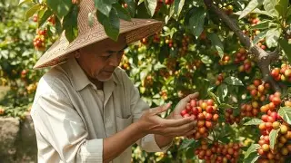
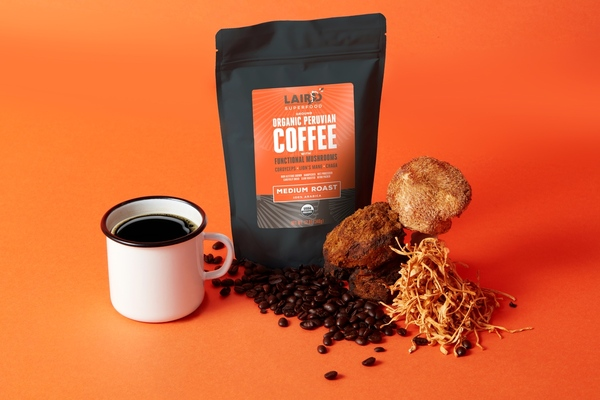
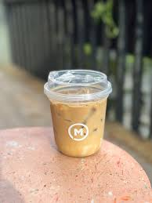

Galeri produk & kegiatan

Pemetikan manual
Proses pemetikan biji kopi terbaik langsung dari perkebunan lokal untuk menjaga kualitas rasa
 Proses sanlgrai kopi tradisional
Proses sanlgrai kopi tradisional
Biji kopi disangrai secara tradisional untuk menghasilkan aroma dan cita rasa khas Nusantara
 Kopi lokal dengan kualitas premium
Kopi lokal dengan kualitas premium
Aneka varian kopi lokal pilihan dengan mutu premium dari berbagai daerah di Indonesia
.webp) Stand Street Cup
Stand Street Cup
Kedai kopi keliling Street Cup hadir membawa cita rasa kopi nusantara ke berbagai sudut kota

Kopi Kemasan 100gr
Kemasan praktis 100 gram untuk menikmati kopi premium kapan saja dan di mana saja
 Kopi Cup Hot
Kopi Cup Hot
kopi panas nikmat yang cocok untuk menemani aktivitas harianmu

Kopi Cup Ice
Nikmati sensasi segar kopi dingin yang pas untuk suasana santai dan cuaca panas